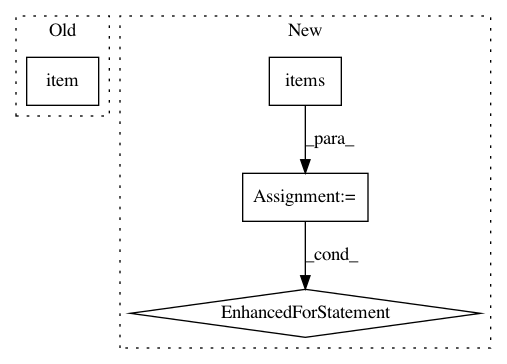

94a995defe223eed0898f25d2332ba6178a92abe,ssd/engine/trainer.py,,do_train,#Any#Any#Any#Any#Any#Any#Any#,46
Before Change
global_step = iteration
summary_writer.add_scalar("losses/total_loss", losses_reduced.item(), global_step=global_step)
summary_writer.add_scalar("losses/location_loss", loss_dict_reduced["regression_loss"].item(), global_step=global_step)
summary_writer.add_scalar("losses/class_loss", loss_dict_reduced["classification_loss"].item(), global_step=global_step)
summary_writer.add_scalar("lr", optimizer.param_groups[0]["lr"], global_step=global_step)
tic = time.time()
After Change
if summary_writer:
global_step = iteration
summary_writer.add_scalar("losses/total_loss", losses_reduced, global_step=global_step)
for loss_name, loss_item in loss_dict_reduced.items():
summary_writer.add_scalar("losses/{}".format(loss_name), loss_item, global_step=global_step)
summary_writer.add_scalar("lr", optimizer.param_groups[0]["lr"], global_step=global_step)
tic = time.time()
In pattern: SUPERPATTERN
Frequency: 3
Non-data size: 4
Instances
Project Name: lufficc/SSD
Commit Name: 94a995defe223eed0898f25d2332ba6178a92abe
Time: 2018-12-19
Author: luffy.lcc@gmail.com
File Name: ssd/engine/trainer.py
Class Name:
Method Name: do_train
Project Name: reinforceio/tensorforce
Commit Name: a07d174b57d3be7914fc1ce172c87ea7d487d241
Time: 2020-04-20
Author: alexkuhnle@t-online.de
File Name: tensorforce/core/optimizers/subsampling_step.py
Class Name: SubsamplingStep
Method Name: step
Project Name: open-mmlab/mmdetection
Commit Name: cd0d37ccb398b7e80dd7af06925246e133d8178c
Time: 2019-12-18
Author: yhcao6@gmail.com
File Name: mmdet/apis/train.py
Class Name:
Method Name: parse_losses